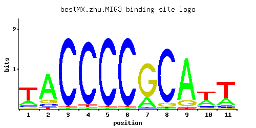

MIG3
YER028C
Probable transcriptional repressor involved in response to toxic agents such as hydroxyurea that inhibit ribonucleotide reductase; phosphorylation by Snf1p or the Mec1p pathway inactivates Mig3p, allowing induction of damage response genes
Best-performing DNA-binding model.

View and copy the recommended matrices ↘
A | 0.22 0.75 0.01 0.01 0.01 0.01 0.21 0.01 0.84 0.33 0.25 C | 0.11 0.10 0.97 0.95 0.97 0.97 0.01 0.92 0.02 0.11 0.10 G | 0.06 0.11 0.01 0.01 0.01 0.01 0.77 0.07 0.13 0.06 0.02 T | 0.62 0.04 0.01 0.03 0.01 0.01 0.01 0.01 0.01 0.51 0.63
A | 22 75 1 1 1 1 21 1 84 33 25 C | 11 10 97 95 97 97 1 92 2 11 10 G | 6 11 1 1 1 1 77 7 13 6 2 T | 62 4 1 3 1 1 1 1 1 51 63
A | -0.37 0.85 -3.47 -3.47 -3.47 -3.47 -0.42 -3.47 0.97 0.03 -0.25 C | -0.49 -0.59 1.68 1.66 1.68 1.68 -2.89 1.63 -2.20 -0.49 -0.59 G | -1.10 -0.49 -2.89 -2.89 -2.89 -2.89 1.45 -0.94 -0.33 -1.10 -2.20 T | 0.66 -2.08 -3.47 -2.37 -3.47 -3.47 -3.47 -3.47 -3.47 0.47 0.68
Alternative candidate matrices 3
Historical matrix candidates from the original ScerTF database. Expand a source to inspect its original logo, scores, and matrix values.
MIG3Badis et. al.P = 0.02125View matrix ↘
MIG3Foat et. al.P = 0.01331View matrix ↘
MIG3Zhao and StormoP = 0.02125View matrix ↘
Gene-level annotations and interactions.
Genes bound in ChIP-chip experiments 33 genes
YAR050W, YBR012W-A, YBR012W-B, YBR099C, YBR229C, YCR018C-A, YCR019W, YDL214C, YDL245C, YDL246C, YDR040C, YDR041W, YDR042C, YDR084C, YDR343C, YEL070W, YER189W, YER190W, YFR017C, YHR033W, YJL148W, YJL219W, YJL221C, YJR158W, YJR159W, YLL004W, YLL005C, YLR011W, YMR258C, YOL156W, YOL157C, YOR236W, YPR142C
Genes affected by TF deletion 1 genes
No Data
Predicted TF–TF partners 27 genes
AFT2, CAT8, CEP3, CIN5, GIS1, GSM1, MIG1, MSN2, MSN4, NRG1, PDR1, PDR8, RGM1, RGT1, RPH1, RSF2, STB5, STP1, STP2, SUT1, SUT2, UME6, USV1, YER130C, YER184C, YPR196W, YRM1